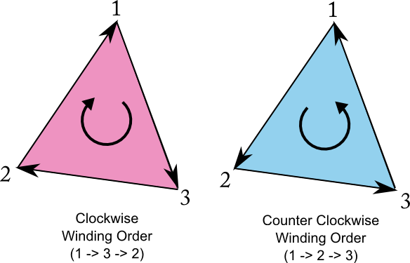

Daca am incerca sa reducem intregul API de OpenGL la mari concepte acestea ar fi:
Shaderele vor fi introduse pe parcursul cursului.
Starile reprezinta un concept mai larg, OpenGL fiind de fapt un mare automat finit cu o multime de stari si posibilitati de a trece dintr-o stare in alta. De-a lungul laboratoarelor o parte din aceste stari vor fi folosite pentru a obține efectele dorite.
Datele contin informatiile ce definesc scena, precum:
Primitiva de baza in OpenGL este triunghiul. Astfel asa cum se poate observa si in imaginea de sus pentru a desena un obiect acesta trebuie specificat prin triunghiuri.
Cubul descris mai sus este specificat prin lista celor 8 coordonate de varfuri si o lista de 12 triunghiuri care descrie modul in care trebuie unite varfurile specificate in lista precedenta pentru a forma fețele cubului. Folosind varfuri si indici putem descrie in mod discret orice obiect tridimensional.
Mai jos regasiti principalele primitive acceptate de standardul OpenGL 3.3+.
Dupa cum se poate observa exista mai multe metode prin care geometria poate fi specificata:
O observatie importanta legata de topologie este ordinea varfurilor intr-o primitiva solida (nu linie, nu punct) cu mai mult de 2 varfuri. Aceasta ordine poate fi in sensul acelor de ceas sau in sens invers.

API-ul OpenGL ofera posibilitatea de a testa orientarea aperenta pe ecran a fiecarui triunghi inainte ca acesta sa fie redat si sa il ignore in functie de stare de discard setata: GL_FRONT sau GL_BACK. Acesta functionalitatea poarta numele de Face Culling si este foarte importanta deoarece reduce costul de procesare total.
In mod normal face-culling este dezactivat. Acesta poate fi activat folosind comanda glEnable:
glEnable(GL_CULL_FACE);
Pentru a dezactiva face-culling se foloseste comanda glDisable:
glDisable(GL_CULL_FACE);
Pentru a specifica ce orientare a fetelor sa fie ignorata se foloseste comanda glCullFace
// GL_FRONT, GL_BACK, and GL_FRONT_AND_BACK are accepted. // The initial value is GL_BACK. glCullFace(GL_BACK);
Un „mesh” este un obiect tridimensional definit prin varfuri si indici. In laborator aveti posibilitatea sa incarcati meshe in aproape orice format posibil prin intermediul clasei Mesh.
Un vertex buffer object reprezinta un container in care stocam date ce tin de continutul varfurilor precum:
Un vertex buffer object se poatea crea prin comanda OpenGL glGenBuffers:
GLuint VBO_ID; // ID-ul (nume sau referinta) buffer-ului ce va fi cerut de la GPU glGenBuffers(1, &VBO_ID); // se genereaza ID-ul (numele) bufferului
VBO_ID.
Pentru a distruge un VBO si astfel sa eliberam memoria de pe GPU se foloseste comanda glDeleteBuffers:
glDeleteBuffers(1, &VBO_ID);
Pentru a putea pune date intr-un buffer trebuie intai sa legam acest buffer la un „target”. Pentru un vertex buffer acest „binding point” se numeste GL_ARRAY_BUFFER, si se poate specifica prin comanda glBindBuffer:
glBindBuffer(GL_ARRAY_BUFFER, VBO_ID);
In acest moment putem sa facem upload de date din memoria CPU catre GPU prin intermediul comenzii glBufferData:
glBufferData(GL_ARRAY_BUFFER, sizeof(vertices[0]) * vertices.size(), &vertices[0], GL_STATIC_DRAW);
&vertices[0], si copiaza in memoria video dimensiunea specificata prin parametrul al 2-lea.
Un index buffer object (numit si element buffer object) reprezinta un container in care stocam indicii vertex-ilor. Cum VBO si IBO sunt buffere, ele sunt extrem de similare in constructie, incarcare de date si destructie.
glGenBuffers(1, &IBO_ID); glBindBuffer(GL_ELEMENT_ARRAY_BUFFER, IBO_ID); glBufferData(GL_ELEMENT_ARRAY_BUFFER, sizeof(indices[0]) * indices.size(), &indices[0], GL_STATIC_DRAW);
La fel ca la VBO, creem un IBO si apoi il legam la un punct de legatura, doar ca de data aceasta punctul de legatura este GL_ELEMENT_ARRAY_BUFFER. Datele sunt trimise catre bufferul mapat la acest punct de legatura. In cazul indicilor toti vor fi de dimensiunea unui singur intreg.
Intr-un vertex array object putem stoca toata informatia legata de starea geometriei desenate. Putem folosi un numar mare de buffere pentru a stoca fiecare din diferitele atribute („separate buffers”). Putem stoca mai multe(sau toate) atribute intr-un singur buffer („interleaved” buffers). In mod normal inainte de fiecare comanda de desenare trebuie specificate toate comenzile de „binding” pentru buffere sau atribute ce descriu datele ce doresc a fi randate. Pentru a simplifica acesta operatie se foloseste un vertex array object care tine minte toate aceste legaturi.
Un vertex array object este folosind comanda glGenVertexArrays:
GLuint VAO_ID; glGenVertexArrays(1, &VAO_ID);
Este legat cu glBindVertexArray:
glBindVertexArray(VAO_ID);
Si este distrus cu glDeleteVertexArrays:
glDeleteVertexArrays(1, &VAO_ID);
Dupa ce toate legaturile au fost specificate este recomandat sa dea comanda glBindVertexArray(0) pentru a dezactiva legatura catre VAO-ul curent, deoarece altfel riscam ca alte comenzi ulterioare OpenGL sa fie legate la acelasi VAO si astfel sa introducem foarte usor erori in program.
Inainte de comanda de desenare este suficient sa legam doar VAO-ul ca OpenGL sa stie toate legaturile create la constructia obiectului.
In cadrul laboratorului vom invata sa folosim VAO, VBO, IBO si astfel sa generam si incarcam geometrie simpla.
Laboratorul pune la dispozitie structura VertexFormat ce va fi utilizata ca baza pentru a crea geometria.
struct VertexFormat { // position of the vertex glm::vec3 position; // vertex normal glm::vec3 normal; // vertex texture coordinate glm::uvec2 text_coord; // vertex color glm::vec3 color; };
Clasa Mesh pune la dispozitie posibilitatea de a incarca geometrie simpla folosind diverse metode:
// Initializes the mesh object using a VAO GPU buffer that contains the specified number of indices bool InitFromBuffer(unsigned int VAO, unsigned short nrIndices); // Initializes the mesh object and upload data to GPU using the provided data buffers bool InitFromData(std::vector<VertexFormat> vertices, std::vector<unsigned short>& indices); // Initializes the mesh object and upload data to GPU using the provided data buffers bool InitFromData(std::vector<glm::vec3>& positions, std::vector<glm::vec3>& normals, std::vector<unsigned short>& indices);
F3 - afisează/ascunde gridul din scena
Space - deseneaza primitivele doar prin puncte sau linii(wireframe) sau geometrie opaca
Laborator2::CreateMesh dar puteti folosi metodele Mesh::InitFromData() pentru a verifica validitatea geometriei.
Laborator2::CreateMesh astfel incat sa incarcati geometria pe GPUMesh::InitFromBuffer() pentru a initializa un obiect mesh pornind de la bufferele createCreateMeshglEnable() / glDisable()Total: 100p + Bonus